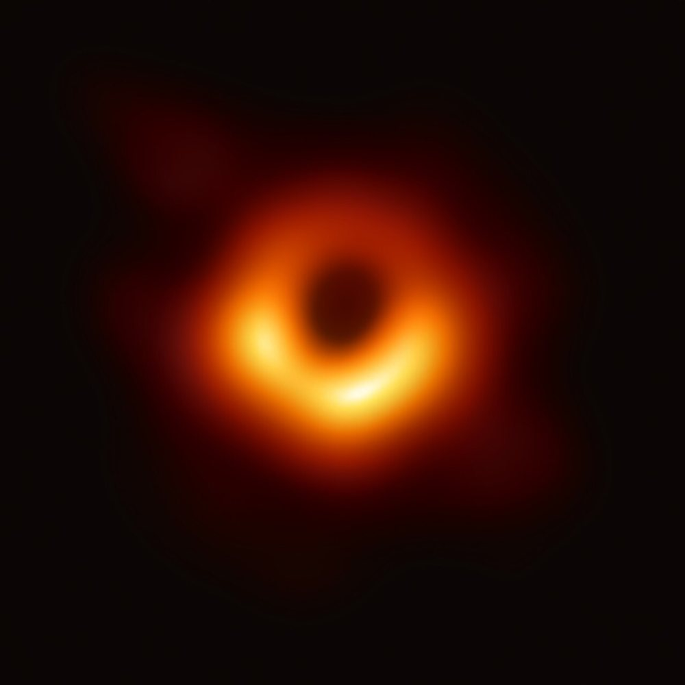

Cómo cae el gas en un agujero negro y por qué brilla
Un agujero negro no aspira como una aspiradora. Si un gas llega con un poco de movimiento lateral, no cae: orbita. Para caer, tiene que deshacerse de su momento angular, y eso resulta dificilísimo. Por eso, el gas forma un disco que gira y se calienta hasta brillar, y los objetos más oscuros del universo terminan rodeados de algunas de las cosas más luminosas que existen.
Cuando un gas con momento angular se acerca a un objeto compacto, no puede caer directamente [1]. En un disco en rotación kepleriana, el momento angular específico aumenta con el radio. Por eso, una partícula solo puede caer si se le quita ese momento angular o se le transfiere a partículas más alejadas [2]. Un disco es la forma de hacerlo: parte del gas cae y otra parte se lleva el giro hacia afuera.
El mecanismo básico es la fricción. Los anillos vecinos giran a distinta velocidad, y esa diferencia produce un torque que intercambia momento angular entre ellos [1]. Es el mismo roce entre capas de un flujo de Couette. Un anillo que pierde momento angular se acerca al centro [1].
Patinadores que se pasan el giro: imaginá patinadores en círculos, tomados de la mano con los vecinos. Los de adentro van más rápido, y tiran de los de afuera. Los de afuera se aceleran y se alejan; los de adentro se frenan y caen hacia el centro.
Hay una dificultad seria. La viscosidad molecular es demasiado chica para explicar los tiempos de evolución observados en los discos [2]. Hace falta una viscosidad efectiva muchísimo mayor, y lo natural es pensar en turbulencia. H. Spruit menciona números de Reynolds del orden de 10¹⁴ [1].
En 1973, N. Shakura y R. Sunyaev resolvieron la cuestión práctica con una idea audaz: reunir toda la ignorancia en un solo número, α, y modelar el disco con él (es lo que se conoce como disco α) [2]. Eso permitió construir modelos, aunque no decía de dónde salía esa turbulencia.
La respuesta llegó en 1991, cuando S. Balbus y J. Hawley identificaron una inestabilidad lineal que genera turbulencia magnetohidrodinámica en un disco [2][3]. Ya había sido descripta por Velikhov en 1959 y por Chandrasekhar en 1961 [1]. Terquem la describe como el único mecanismo que, hasta el momento de su trabajo, había demostrado iniciar y sostener turbulencia en los discos [2].
La idea es que un campo magnético débil conecta elementos de gas en órbitas distintas como un resorte. El de adentro gira más rápido y se adelanta, y el resorte lo frena; pierde momento angular y cae, mientras el de afuera gana y se aleja (una descripción simplificada). Esa separación estira más el resorte, y el proceso se refuerza. Spruit señala que esta inestabilidad muestra que, con alta conductividad, los discos de acreción deben ser magnéticos [1].
Un debate vivo: Spruit advierte con ironía que, en la comunidad de fluidos, se considera disparatado sugerir que un flujo a esos números de Reynolds no sea turbulento [1], aunque la popularidad del mecanismo magnético viene de otros resultados negativos [1]. La forma real del campo solo se puede obtener de simulaciones numéricas [1], y cuánto transporta sigue en discusión.
Un gas que cae desde lejos hasta un radio r gana energía del orden de GMm/r. La mitad queda como energía orbital, y lo demás se disipa [1]. Si, a modo de ejemplo, el disco llegara hasta r = 6GM/c², este cálculo newtoniano daría alrededor de un 8 % de la energía en reposo liberada (un cálculo propio). Por eso, el gas alrededor de un agujero negro puede brillar tanto. La imagen del Event Horizon Telescope de M87* muestra la emisión de ese gas alrededor de la sombra del agujero negro [4].
El gas no cae en un agujero negro: orbita, y para acercarse tiene que entregar su momento angular. La viscosidad común no alcanza; lo que hace el trabajo es una turbulencia sostenida por campos magnéticos. El roce calienta el disco hasta que brilla. Es mecánica de fluidos en un lugar donde todavía importan la relatividad, el magnetismo y la luz.

Pregunta para la comunidad: Si el momento angular no se puede destruir, ¿a dónde va el que pierde el gas que cae? ¿Qué le pasa al borde exterior de un disco? Hay una pista en los chorros que salen de algunos agujeros negros.